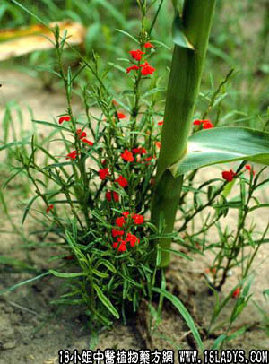

别名：疳积草。
植物名：独脚金。
生长环境：本品为一年生，直立草本。是半寄生性草本，在开旷地活坟墓路旁的干旱草地上。
分布：广东各地均有，以荒地较多；南部更多，亚洲热带各地亦有。
入药部分：全草。
采集期：夏、秋。五月当旺。
自采地点：山岗。
性味：性微凉、味甘、气香。
功能：解积、去肝火。
主治、用量和用法：1、小儿肝火盛：干用2钱，清水煎服，或生用2至3钱，加猪瘦肉同切碎，蒸熟食；2、疳积：用法同上。
（方歌）：小儿肝盛积成疳，妙药还推独脚金，瘦肉切同蒸熟食，潜移积患见功深。
参考资料：《广州常用草药验方集解》治疗疳积经验方：葫芦茶3钱、独脚金2钱、布渣叶3钱、威灵仙2钱、水仙子2钱、木通2钱、车前子2钱、六腹皮2钱、蝉蜕1钱、白芍2钱、龙齿3钱，水煎，空腹时服。治肝火炽动，或神疲懒言，愁闷而怒，皮黄骨瘦，腹膨口渴，夜啼潮热，晚上易惊，大便有虫，小便赤黄，欢喜扑地、挖鼻咬唇等疳积症状。
（方解）葫芦茶利尿消滞驱虫；独脚金平肝去积；水仙子入脾胃、泻热疗疳；布渣叶、大腹皮行胃肠之气，以消导积滞；龙齿、白芍敛气守神。合为驱虫、消滞、解疳积敛肝气、宁心神之剂。至于威灵仙、蝉蜕、木通‘车前等品，有祛风利尿作用，如无必要，可以省去。
（方歌）小儿疳积葫芦茶、独脚腹皮及布渣，蝉蜕木通车前子，水仙白芍与龙齿。